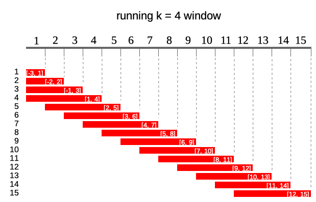
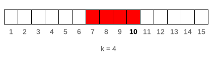
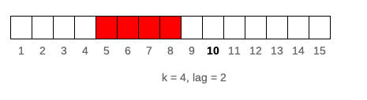

vignettes/getting_started_with_runner.Rmd
getting_started_with_runner.RmdPackage contains standard running functions (aka. rolling) with
additional options like varying window size, lagging, handling missings
and windows depending on date. runner brings also rolling
streak and rolling which, what extends beyond range of functions already
implemented in R packages. This package can be successfully used to
manipulate and aggregate time series or longitudinal data.
runner package provides functions applied on running
windows. The most universal function is runner::runner
which gives user possibility to apply any R function f in
running window. In example below 4-months correlation is calculated
lagged by 1 month.
library(runner)
x <- data.frame(
date = seq.Date(Sys.Date(), Sys.Date() + 365, length.out = 20),
a = rnorm(20),
b = rnorm(20)
)
runner(
x,
lag = "1 months",
k = "4 months",
idx = x$date,
f = function(x) {
cor(x$a, x$b)
}
)There are different kinds of running windows and all of them are
implemented in runner.
Following diagram illustrates what running windows are - in this case
running windows of length k = 4. For each of 15 elements of
a vector each window contains current 4 elements.

k denotes number of elements in window. If
k is a single value then window size is constant for all
elements of x. For varying window size one should specify k
as integer vector of length(k) == length(x) where each
element of k defines window length. If k is
empty it means that window will be cumulative (like
base::cumsum). Example below illustrates window of
k = 4 for 10th element of vector x.

runner(1:15, k = 4)lag denotes how many observations windows will be lagged
by. If lag is a single value than it is constant for all
elements of x. For varying lag size one should specify lag
as integer vector of length(lag) == length(x) where each
element of lag defines lag of window. Default value of
lag = 0. Example below illustrates window of
k = 4 lagged by lag = 2 for 10-th element of
vector x. Lag can also be negative value, which shifts
window forward instead of backward.

runner(
1:15,
k = 4,
lag = 2
)